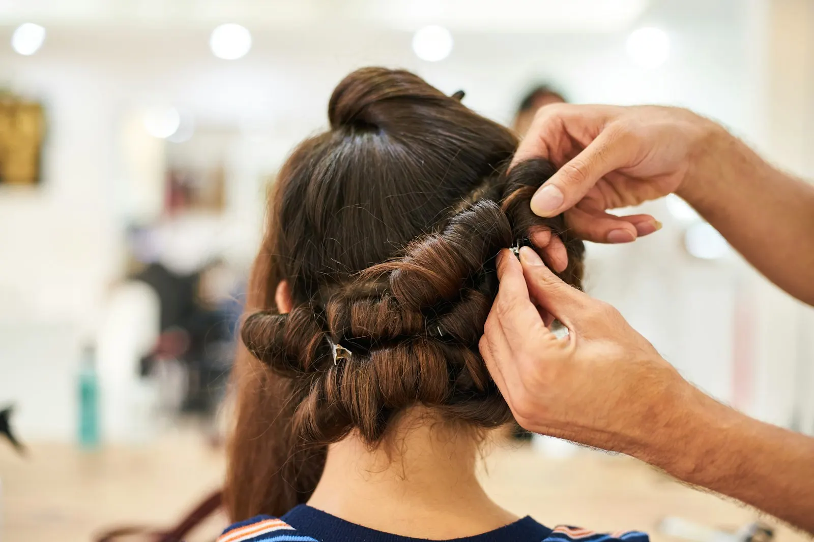
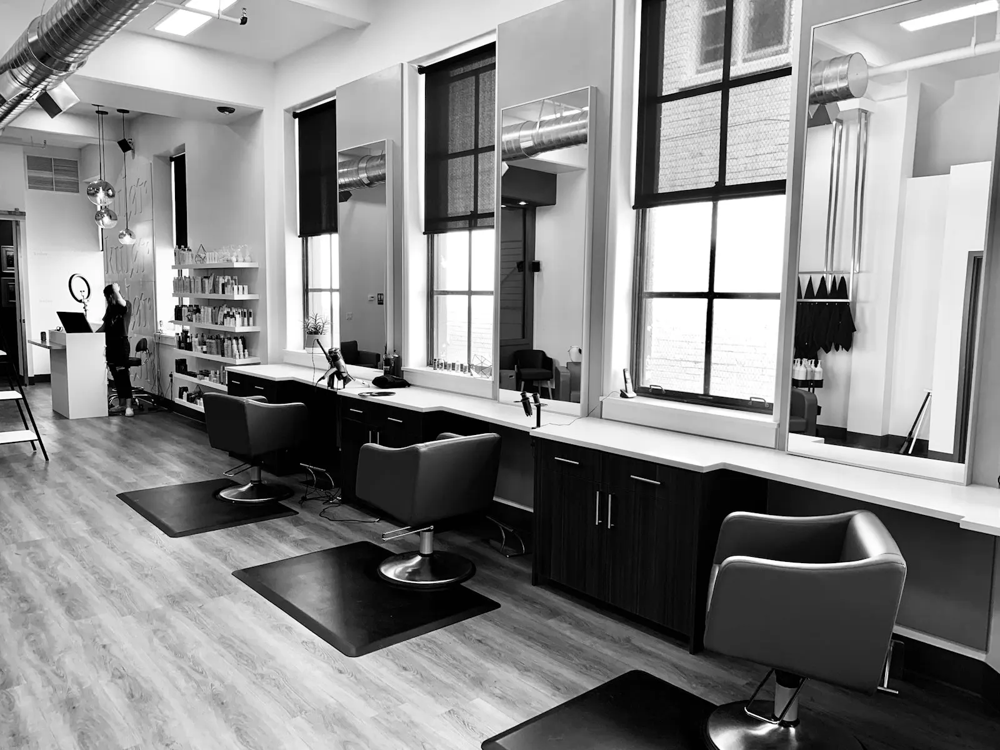
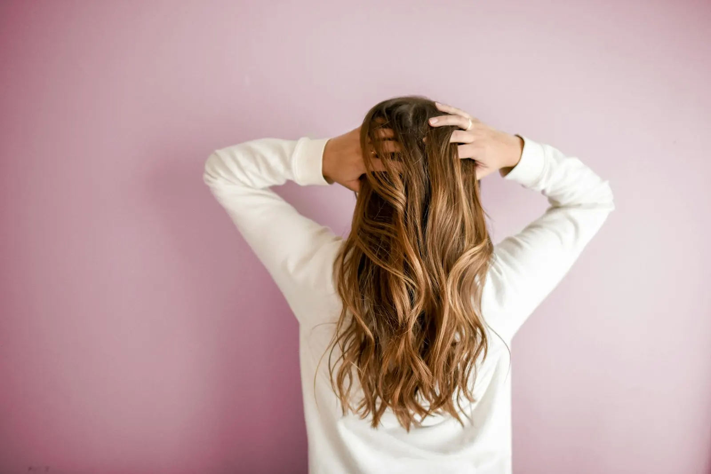
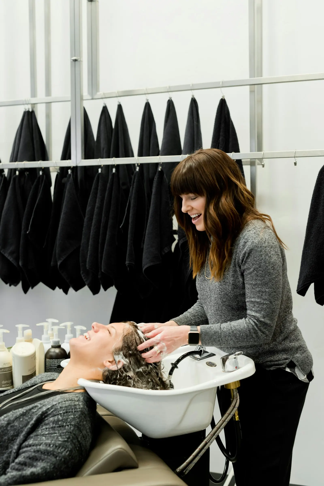
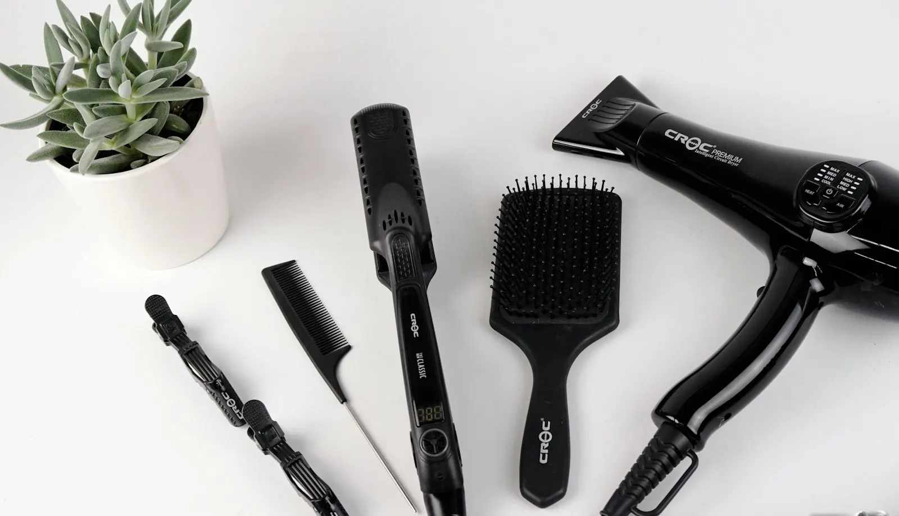

Knippen en brushen
Van een kleine bijwerking tot een nieuwe snit, mooi afgewerkt.
Een rustig salon waar je niet moet roepen om gehoord te worden. Je vertelt wat je wil, Valerie denkt mee en kijkt eerlijk naar wat jouw haar aankan. Je gaat naar huis met een kapsel dat je ook thuis zelf in model krijgt.
5,0 ★★★★★Elke klant gaf vijf sterren op Google. Lees wat ze schrijven

Bij Kapsalon Valerie draait het om jou in de stoel. Geen haast, geen lopende band. Er wordt eerst geluisterd en pas dan geknipt.
Wil je iets helemaal anders, of gewoon je vertrouwde snit wat bijwerken? Allebei even welkom. En twijfel je, dan krijg je eerlijk advies over wat bij jouw haar past.

Benieuwd naar de prijzen of naar iets dat er niet tussen staat? Bel even of stuur een berichtje, dan krijg je meteen antwoord.
Van een kleine bijwerking tot een nieuwe snit, mooi afgewerkt.

Een frisse kleur of je grijs netjes weggewerkt, afgestemd op jou.
Krullend haar vraagt een andere aanpak. Daar wordt rekening mee gehouden.

Een knipbeurt zonder tranen, met geduld en een beetje plezier.
Vijf sterren op Google. Dat zegt meer over een salon dan wat we hier ooit zelf kunnen schrijven.
Lees de reviews op Google
Ik maakte deze demo voor jullie om te tonen wat er kan. Na een kort gesprek maak ik er iets veel persoonlijkers van, helemaal naar jullie wens.
Vrijblijvend. Ik kom langs of we bellen.
Op maat, op jullie eigen domein.
Geen voorschot. Jullie betalen pas als alles klaar is.
Hosting, domeinnaam en kleine wijzigingen, zoals nieuwe openingsuren.
Omdat een voorbeeld meer zegt dan een mail. Zo zien jullie meteen wat er kan, en het kost jullie niets.
Nee. Het gesprek is vrijblijvend. Vinden jullie het niks, dan is het daarmee gedaan.
Na ons gesprek staat jullie site binnen 10 tot 14 dagen online.
Zeker. Jullie domeinnaam kan gewoon blijven, de nieuwe site komt in de plaats van de oude.
Nee, dat doe ik op basis van ons gesprek. Eigen foto's zijn mooi meegenomen, maar niet nodig om te starten.